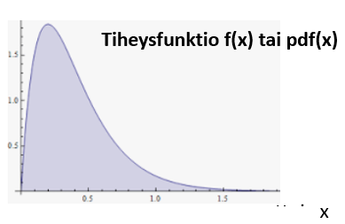
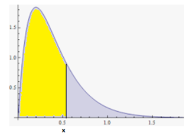
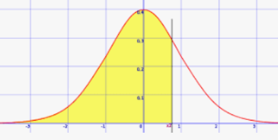
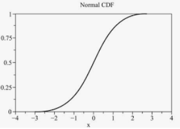
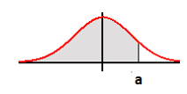
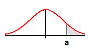
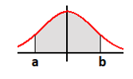
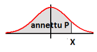
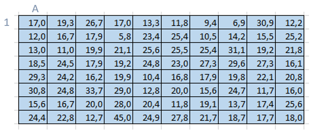
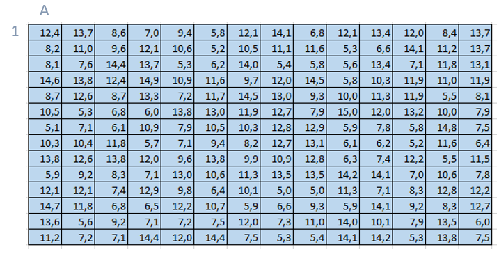

Todennäköisyysjakaumat
Contents
Todennäköisyysjakaumat¶
Tilasto-oppiin läheisesti liittyvä käsite on todennäköisyys.
Monet tilastomuuttujat, kuten esim. ihmisen pituus tai elinaika, tai vaikkapa metsikön puiden läpimitta, noudattavat jakaumaa, jota voidaan kuvata jollakin tunnetulla todennäköisyysjakaumalla. Yleisesti käytettyjä jakaumia ovat mm. Gaussin normaalijakauma ja Weibull-jakauma. Todennäköisyysjakaumien käyttö tilastomuuttujan mallinnuksessa säästää tiedonkeruuta. Kun dataa on riittävästi mallin parametrien laskemiseen, voidaan siirtyä datan keruusta matemaattisen mallin avulla suoritettavaan laskentaan.
Todennäköisyyden määritelmä¶
Todennäköisyys jaetaan usein kahteen tyyppiin: klassinen todennäköisyys ja tilastollinen todennäköisyys . Klassista todennäköisyyttä tarvitaan esim. kun lasketaan korttipelien erilaisten käsien todennäköisyyksiä tai nopanheiton tuloksia. Tilastollista eli empiiristä todennäköisyyttä voi hyödyntää esim. vakioveikkauksessa tai vakuutusten hinnoittelussa.
Klassinen todennäköisyys
Nimitykset:
E = tapahtuma-avaruus eli otosavaruus , joka koostuu alkeistapauksista joiden tiedetään olevan yhtä todennäköisiä
A = tapahtuma, joka on E:n osajoukko, jonka todennäköisyys halutaan laskea
Tapahtuman A todennäköisyys P(A) määritellään seuraavasti:
\(P(A)=\frac {k}{n}\)
missä n = kaikkien mahdollisten alkeistapausten lukumäärä ja k = tapahtuman A kannalta suotuisten alkeistapausten lukumäärä
Laatikossa on 8 palloa, joista 4 punaista, 3 sinistä ja 1 keltainen. Laatikosta otetaan umpimähkään 1 pallo. Millä todennäköisyydellä se on sininen?
Ratkaisu P(sininen)=\(\frac {3}{8}\)
(8 yhtä todennäköisestä alkeistapauksesta 3 on “suotuisaa” eli antaa sinisen pallon)
Tilastollinen eli empiirinen todennäköisyys
Tapahtuman A tilastollinen todennäköisyys on tapahtuman A suhteellisen frekvenssin
P(A)= \(\frac {n(A)}{n}\)
raja-arvo, kun satunnaista koetta toistetaan äärettömän monta kertaa.
Ampumahiihtäjä Tero Sipilä ampui makuulta vuosien 2021 aikana 670 kilpailulaukausta, joista 525 osui maaliin. Mikä on Teron osumistodennäköisyys makuuammunnassa?
Ratkaisu P(osuma)=\(\frac {525}{670} = 0.784 = 78.4\%\)
Esim. kolikon heitossa kruunan klassinen todennäköisyys on 1/2, koska kruuna on yksi kahdesta yhtä todennäköisestä alkeistapauksesta.
Tilastollinen todennäköisyys on 50%, jos heittojen määrän lähestyessä ääretöntä kruunien määrä lähestyy 50 prosenttia.
Diskreetin todennäköisyysjakauman odotusarvo ja keskihajonta¶
Kun jossakin toistokokeessa on äärellinen määrä mahdollisia tuloksia, joiden todennäköisyydet tunnetaan, puhutaan diskreetistä todennäköisyysjakaumasta.
Jakauma voidaan esittää frekvenssitaulukkoa muistuttavana taulukkona, jonka sarakkeina ovat muuttujan mahdolliset arvot \(x_i\) ja niiden todennäköisyydet \(p_i\).
Jakaumaa käyttäen voidaan laskea kaksi parametria: odotusarvo ja keskihajonta.
Odotusarvo (expected value) tarkoittaa raja-arvoa, jota toistokokeiden keskiarvo lähestyisi, kun toistojen määrä lähestyisi ääretöntä.
Diskreetin todennäköisyysjakauman parametrit
Odotusarvo \(\hspace{5mm}\mu=\sum p_ix_i\)
Keskihajonta \(\hspace{2mm}\sigma=\sum p_i(x_i-\mu)^2\)
Ampumahiihdon pystyammunnassa on maalina 5 taulua, jotka pitää pudottaa. Erään suomalaisen ampujahiihtäjän todennäköisyydet eri tuloksille ovat viimeisen kahden vuoden kilpailuissa olleet seuraavat:
osumat |
todennäköisyys |
|---|---|
5 |
4.5% |
4 |
58.2% |
3 |
32.5% |
2 |
4.6% |
1 |
0.2% |
0 |
0% |
Mikä on tämän perusteella yksittäisen ammunnan tuloksen odotusarvo ja keskihajonta?
Odotusarvo \(\mu=\sum p_ix_i=0.045\cdot 5+0.582\cdot 4+0.325\cdot 3+0.046\cdot 2+0.002\cdot 1=3.62\)
Keskihajonta \(\sigma=\sum p_i(x_i-\mu)^2\)
\(\hspace{30mm}=0.045\cdot (5-3.62)^2+0.582\cdot (4-3.62)^2\)
\(\hspace{30mm}+0.325\cdot (3-3.62)^2+0.046\cdot (2-3.62)^2+0.002\cdot (1-3.62)^2=0.43\)
Jatkuvat todennäköisyysjakaumat¶
Tiheysfunktio p(x)¶
Jatkuvassa todennäköisyysjakaumassa muuttuja voi saada mitä tahansa arvoja tietyllä välillä. Diskreetin jakauman taulukko \((x_i,p_i)\) -pareineen korvautuu tiheysfunktiolla p(x), jonka arvo kuvaa muuttujan arvon x todennäköisyyttä.
Tiheysfunktion englanninkielinen nimi on probability density function ja useissa symbolisen laskennan ohjelmistoissa sen lyhenne on pdf(x)
Tiheysfunktion p(x) ominaisuuksia
\(1.\) Funktio p(x) kuvaa muuttujan arvon x todennäköisyyttä.
\(2.\) \(p(x) \ge 0\) ts. tiheysfunktio voi saada vain positiivisia arvoja.
\(3.\) Tiheysfunktion p(x) ja x- akselin välinen pinta-ala on 1 
Kertymäfunktio \(\varphi(x)\)¶
Kertymäfunktion \(\varphi(x)\) arvo pisteessä x antaa todennäköisyyden sille, että muuttujan arvo on pienempi kuin x.
Kertymäfunktio laskee tiheysfunktion p(x) ja x- akselin välisen pinta-alan välillä \(]-\infty ,x]\).
Kertymäfunktio on englanniksi cumulative density function ja sen lyhenne useissa symbolisen laskennan ohjelmistoissa on cdf(x)
Kertymäfunktion \(\varphi(x)\) ominaisuuksia
\(1.\) \(\varphi(x_0) = P(x \le x_0) \) (=todennäköisyys, että \(x \le x_0\))
\(2.\) Kertymäfunktio kasvaa nollasta maksimiarvoonsa 1
\(3.\) Kuvassa keltaisen alueen pinta-ala edustaa kertymäfunktion arvoa kohdassa x 
Gaussin normaalijakauma¶
Tavallisin ja ehkä yleisimmin käytetty jatkuva jakauma on Gaussin normaalijakauma, jonka tiheysfunktion ja kertymäfunktion määräävät kaksi parametria: keskiarvo μ ja keskihajonta σ
Gaussin normaalijakauman tiheys- ja kertymäfunktiot
Tiheysfunktio \(p(x) = \frac{1}{\sqrt{2\pi\sigma^2}} e^-{\frac{(x-\mu)^2}{2\sigma^{2}}}\)
Kertymäfunktio \(\varphi(x) = \frac{1}{2}[1+erf(\frac{x-\mu}{\sqrt{2}\sigma})]\)
kaavan erf(x) on erikoisfunktio, jonka englanninkielinen nimitys on “error function”
Tiheysfunktion kuvaajaa sanotaan Gaussin kellokäyräksi 
Normaalijakauman kertymäfunktion kuvaaja näyttää seuraavalta:

Ym. kaavoja ei tarvitse tuntea esitetyssä muodossaan. Käytännössä normaalijakauman tiheys- ja kertymäfunktiot löytyvät helposti käytettävässä muodossa mm. Excelissä, sekä useissa symbolisissa laskimissa.
Merkintä: Jos muuttuja x noudattaa normaalijakaumaa, jossa keskiarvo on 𝜇 ja keskihajonta σ , merkitään tätä yleisesti x ~ N(μ, σ) tai pitemmässä muodossa x ~ normal(μ, σ)
Sanotaan myös: ” x on normaalijakautunut parametrein μ ja σ”
Normaalijakauman funktiot Excelissä¶
suomenkielinen Excel: = NORMAALIJAKAUMA(muuttujan arvo; keskiarvo; keskihajonta; kumulatiivinen)
englanninkielinen Excel: = NORM.DIST(muuttujan arvo; keskiarvo; keskihajonta; kumulatiivinen)
Funktion argumentit: muuttujan x arvo, keskiarvo, keskihajonta, sekä boolen muuttuja kumulatiivinen, johon sijoitetaan 0 tai 1. (Arvo 0 merkitsee tiheysfunktiota ja arvo 1 kertymäfunktiota)
Lisäksi Excelissä on kertymäfunktion \(\varphi(x)\) käänteisfunktio NORMAALIJAKAUMA.KÄÄNTEINEN, englanninkielisessä Excelissä NORMINV, jonka käytöstä on esimerkkejä tuonnenpana.
Normaalijakauman käytön perustapauksia¶
Seuraavassa oletetaan, että muuttuja x on “normaalijakautunut”.
Todennäköisyys sille, että muuttujan arvo \(x \le\) a saadaan kertymäfunktion arvona kohdassa a
 \(P(x\le a) = \varphi(a)\)
Todennäköisyys sille, että muuttujan arvo \(x \ge a\)
 \(P(x\ge a) = 1 - \varphi(a)\)
Todennäköisyys sille, että \(a \le x \le b\)
 \(P(a\le x \le b) = \varphi(b)-\varphi(a)\)
Kääntäen voidaan kysyä annettua todennäköisyyskertymää P vastaavaa muuttujan arvoa x.
Tällöin tarvitaan kertymäfunktion käänteisfunktiota \(\varphi ^{-1}\) .
Excelissä käänteisfunktio on NORMAALIJAKAUMA.KÄÄNTEINEN (engl. kielisessä versiossa NORM.INV)
Muuttujan arvo, joka vastaa todennäköisyyskertymää P
 \(x = \varphi^{-1}(P)\)
Esim. Suomen miespuolisen väestön keskipituus on 180.7 cm ja keskihajonta 7.4 cm. Oletetaan, että Suomen miespuolisen väestön pituus noudattaa normaalijakaumaa N(180.7cm, 7.4cm). a) Millä todennäköisyydellä miehen pituus \(\ge 213cm\), b) Mikä on pituuden P90 prosenttipiste? c) Millä todennäköisyydellä pituus on välillä 190cm-200cm?
Vastauksia: a) 0.0000064 b) 190.2 cm c) 9.7 pros
Ratkaisu
a) \(P(x \ge 213) = 1 - \varphi(213) = 1-0,99999364= 0,00000636\) (n. 6 miljoonasta)
\(Excel: \hspace{5mm}\color{red}{=1-NORMAALIJAKAUMA(213;180,7;7,4;1)}\)
b) P90 prosenttipiste = \(\varphi^{-1}(0.90) = 190.2 \)
\(Excel: \hspace{5mm}\color{red}{=NORMAALIJAKAUMA.KÄÄNTEINEN(0,90;180,7;7,4)}\)
c) \(P(190\le x \le 200) = \varphi(200)-\varphi(190) = 0.996 – 0.899 = 0.097 = 9.7\%\)
\(Excel: \hspace{5mm}\color{red}{=NORMAALIJAKAUMA(200;180,7;7,4,1)}\)
\(\hspace{18mm}\color{red}{-NORMAALIJAKAUMA(190;180,7;7,4,1)}\)
Esimerkki sepelin kelpoisuusmäärityksestä, joka perustuu normaalijakauman käyttöön.
Eräs sepelimurske on kelvollista käyttötarkoitukseensa, jos enintään 2.5% sen kivistä ylittää maksimiläpimitaltaan arvon 30 mm. Alla olevassa taulukossa on satunnaisesti valittujen 80 kivenkappaleen maksimiläpimitat työntömitalla mitattuna. Täyttääkö murske laatukriteerin? Oletetaan, että kyseisen murskeen kivien läpimitat noudattavat normaalijakaumaa. 
Ratkaisu
Määritetään läpimittajakauman keskiarvo ja keskihajonta:
keskiarvo \(\mu = 20.1\) ja keskihajonta \(\sigma = 6.8\)Lasketaan todennäköisyys sille, että ko. sepelin kiven läpimitta < 30 mm
\(\varphi(30) = 0.927 = 92.7\% \hspace{5mm}(\color{red}{=NORMAALIJAKAUMA(30;20,1;6,8;1)})\)Johtopäätös: murskeen kivistä 92.7 prosenttia on läpimitaltaan alle 30 mm, kun prosenttiluvun pitäisi olla 97.5. Murske ei ole kelvollista
Seuraavassa esimerkissä muuttuja ei ole normaalijakautunut. Tästä syystä dataa on oltava enemmän ja laskennassa ei voi käyttää normaalijakauman funktiota.
Esimerkki P90 arvon määrityksestä muuttujalle, joka ei noudata normaalijakaumaa.
Useiden sisäilman haitallisten yhdisteiden viitearvoina THL:n dokumenteissa ovat ns. P90 –arvoja (ts. arvoja, joita suurempia tavataan vain 10% mittauksissa). Seuraavassa on 144 mitattua sisäilman formaldehydipitoisuutta eri puolilta Suomea. Yksikkönä on 1 μg/m3 Mikä olisi niiden perusteella formaldehydin P90 – arvo pyöristettynä kokonaisluvuksi? Arvot eivät noudata normaalijakaumaa, joten älä käytä normaalijakaumaan liittyviä funktioita.

Ratkaisu
Tehtävä ratkeaa käyttämällä Excelin PROSENTTIPISTE – funktiota (engl. Percentile)
\(\color{red}{=PROSENTTIPISTE(A1:N14;0,90)}\) antaa arvoksi 14
Vastaus: \(P90 = 14 μg/m^3\)